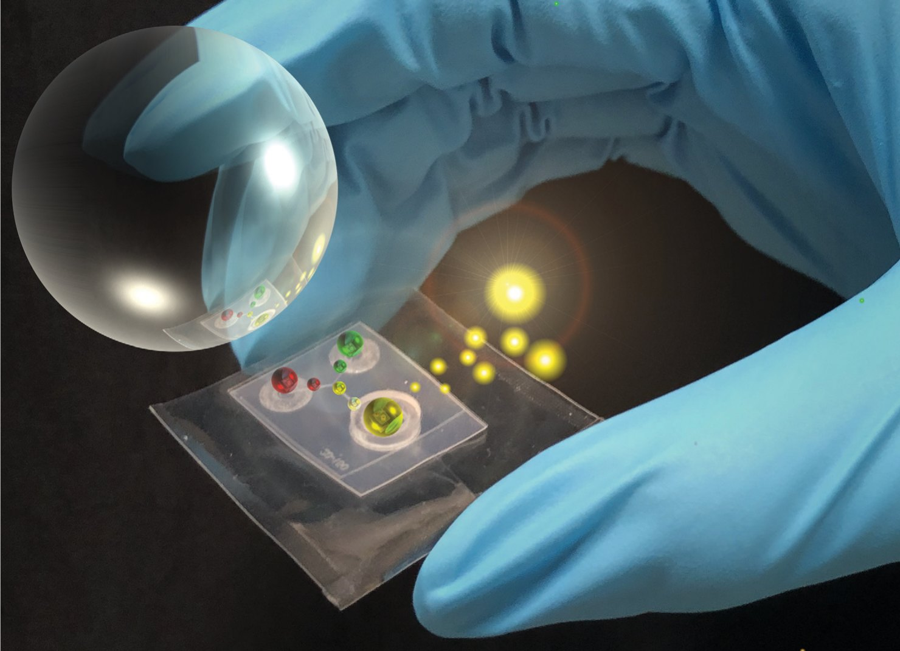
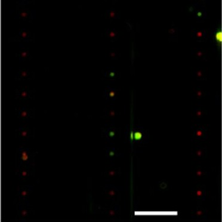
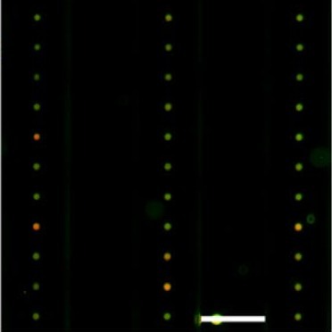
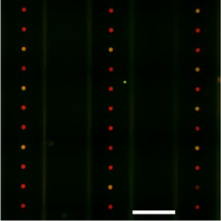
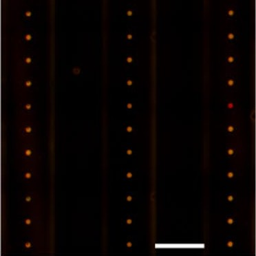
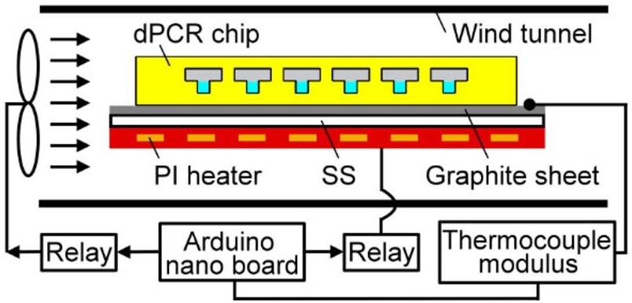
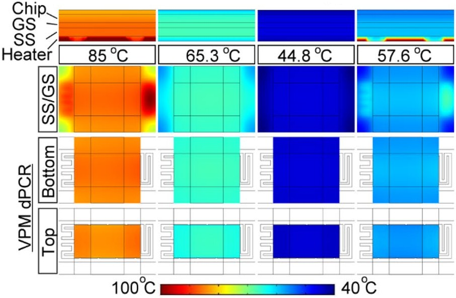
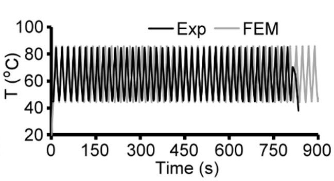

Today a high-precision molecular test still sends the sample as liquid from the bed to a central lab before it becomes data. This work moves that conversion to the bedside, so only the result travels the long distance, at network speed.
Glucose meters made this move for one measurement and reshaped diabetes care. This work aims to make the same move for precise molecular diagnosis. Then every bed becomes a source of molecular data. Getting there takes four fields working as one, each removing a limit of the others.
A robot only has to pipette and place the chip, so the test runs simply on site.
A lab-grade answer from one chip.
Fast enough that the result comes back within the bedside visit.
The lab goes to the patient.
Precise enough to guide treatment, simple and affordable enough to repeat.
The hardware now exists in four pieces: microfluidics, assays, thermal control and robotics. None reaches on-site molecular testing alone. Together, they can.
Rapid point-of-care tests are cheap and simple, but they cannot prepare samples well or quantify trace biomarkers. Precise quantification can, but it stays tied to the central lab.
In microfluidic molecular diagnostics, point-of-care and benchtop development have advanced mostly within their own lanes: one makes tests simpler and cheaper, the other makes them more precise. Many academic studies aim to be both fast and precise, but few mature products bridge the two to run the whole path, from raw sample to result, in a portable form.
A point-of-care test should be ASSURED: Affordable, Sensitive, Specific, User-friendly, Rapid and robust, Equipment-free, Delivered to end users. Clin Biochem Rev 35(3), 2014, 155
Below are existing products and recent studies, compared on where they test, who handles the sample and how they quantify.
| System | What it is | Near the patient | Moves bed to bed on its own | Who handles the sample | Absolute quantification (digital PCR) |
|---|---|---|---|---|---|
| Lab-bound | |||||
| Thermo Fisher, Bio-Rad | Laboratory workstations | No, central lab | No | Lab staff | Yes |
| In-lab, sample-to-answer | |||||
| GeneXpert (Cepheid) | Cartridge-based instrument; third generation unveiled 2026 | Near-patient labs, fixed site | No | Clinical staff load the cartridge | No, real-time PCR |
| Cobas Liat (Roche) | Cartridge-based instrument, results in 20 min or less | Near-patient labs, fixed site | No | Clinical staff load the cartridge | No, real-time PCR |
| Portable | |||||
| IDA (Kompass Diagnostics) | Palm-sized chemistry, immunoassay and molecular platform, about 10 min (2026) | Yes, finger-prick blood | No | Staff or user applies the sample | Not stated |
| TEMPO (HKUST) | Palm-sized one-pot CRISPR chip, about 35 min; research (Nature Commun. 2026) | Yes | No | User runs the chip, smartphone reads it | No, semi-quantitative |
| Hospital robots | |||||
| Moxi (Diligent Robotics) | Hospital logistics robot | Yes | Yes | Carries it to the lab | — no test |
| Nurabot (Foxconn) | Nursing assistant robot for transport and logistics; multisite in Taiwan (2026) | Yes | Yes | — | — no test |
| Aletta (Vitestro) | Autonomous blood-drawing robot; FDA-cleared for outpatient clinics (2026) | Yes, outpatient clinic | No, stationary | Draws the blood; tubes go to the lab | — no test |
| This work | |||||
| Bedside dPCR robot | Onboard lab on a mobile robot | Yes Simulated | Yes Simulated | The robot, after hand-over Not yet on the robot | Yes Chip published |
Nucleic acid detection is the worked example. It offers high specificity and a very low limit of detection, and it is the test that most depends on a laboratory.
The robot drives to the called bed and receives the sample.
The robot pipettes the sample into the chip, which meters it and each reagent that follows.
Magnetic-bead extraction purifies the nucleic acids on the chip.
The sample splits into a static droplet array.
Rapid thermal cycling on a low-thermal-mass heater.
Fluorescence readout with absolute, multiplex quantification.
The result goes out as data. The robot discards the chip on board and moves on to the next bed.
Chips that run themselves, made like packaging.
The hard part: Microfluidic chips usually depend on external pumps, valves and tubing, more than a robot can carry or run at the bed.
Key result: The chip runs with no external pump. Operation takes two steps: load the reagents, then pierce the vacuum pouch. (Lab Chip 2019, back cover)

The right target, counted molecule by molecule.
Why digital PCR: Absolute quantification without reference genes, suited to low-abundance targets such as rare mutations or small samples.
Key result: Digital PCR ran on a system built in-house: the thin-film chip, vacuum pouch loading and a custom thermal cycler. Its quantification agreed with commercial qRT-PCR. (Microfluid Nanofluid 2022)


High

Less thermal mass, faster detection.
The hard part: A standard PCR cycle takes one to two minutes, the main reason a full test takes hours.
Key result: 40 PCR cycles in 13.3 minutes on the thin-film chip. (Microfluid Nanofluid 2022)



A lab that drives to the bed.
The hard part: Molecular tests like these run in core labs, on expensive instruments operated by trained staff.
Key result: A virtual prototype built in ROS 2 and Gazebo, in which a mobile robot runs the test with its own arms.
One microfluidic chip integrates loading, extraction, mixing and digitization, simple enough for a robot arm to operate.
The reaction module (thermal control, mechanics, fluid control, optical detection) and the software module (image and signal processing, database) come together as a benchtop instrument.
The benchtop instrument mounted on the mobile robot, with real arms, cameras and safety hardware. The robot drives to the bed, loads the chip with its arms and runs the test on board.
A pilot in hospital wards. Staff call the robot, hand over real patient samples, and receive the results at the bedside.
One hospital · one cancer (colorectal, recurrence monitoring) · one method (dPCR) · one robot · one year
Taiwan ceiling for colorectal cancer, if every eligible patient is tested: ~US$8.4M per year.
GeneXpert grew the same way: anthrax screening for the US Postal Service in 2004, hospital MRSA screening in 2007, tuberculosis in 2010.
A point-of-care robot that performs the critical steps for trained staff, inside regulated clinical environments.
AI has transformed omics, drug discovery and pathology imaging. Bedside molecular testing still cannot deliver its stream of information. Once detection is decentralized, the same platform extends beyond nucleic acids to immunoassays and bioelectrical signals, giving denser, timelier information for personalized medicine, early cancer screening, prognosis and treatment guidance.
MEMS photolithography, soft lithography, hot embossing, lamination and thermal fusion bonding, microfluidic control
Exosome enrichment, nucleic acid extraction (spin column, magnetic bead), QC (Qubit, Nanodrop), primer design, RT-PCR, qPCR, digital PCR
Low-thermal-mass heater design, temperature control with thermocouple feedback (Arduino), COMSOL thermal simulation
System architecture and state-machine design, ROS 2, MoveIt 2, Nav2, Gazebo, vision model fine-tuning (YOLO-World)
AutoCAD, SolidWorks, Creo, ImageJ; fluorescence microscope, profilometer, confocal microscope, SEM, AFM
Full publication list: Google Scholar